Formação
Formação
Zero Tolerância à Violência no Desporto: Olhão recebe sessão de sensibilização
Sessão de sensibilização em Olhão reforça valores de respeito, ética e segurança no contexto desportivo.
Fica a par dos principais momentos, eventos, torneios e iniciativas do Andebol Clube Olhão.
Acompanha tudo o que acontece dentro e fora do campo.
Formação
Sessão de sensibilização em Olhão reforça valores de respeito, ética e segurança no contexto desportivo.
 Evento
Evento
Mais de 300 jovens atletas juntam-se em Olhão para celebrar o andebol, a amizade e a formação.
 Inclusão
Inclusão
A equipa ACO/ACASO participou no III Encontro Nacional de Andebol Adaptado, em Tavira.
 Internacional
Internacional
Olhão acolheu um estágio internacional com as seleções Sub-21 de Portugal e Áustria.
 Solidariedade
Solidariedade
O clube associou-se ao Outubro Rosa e promoveu uma ação de sensibilização para a prevenção.
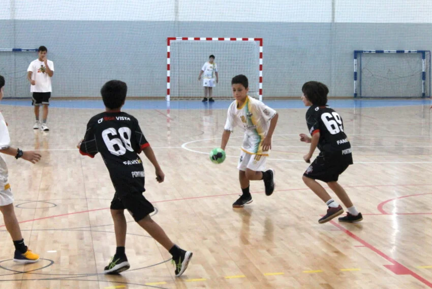
EventoNove clubes, 21 equipas e mais de 200 jovens participaram num fim de semana dedicado ao andebol.
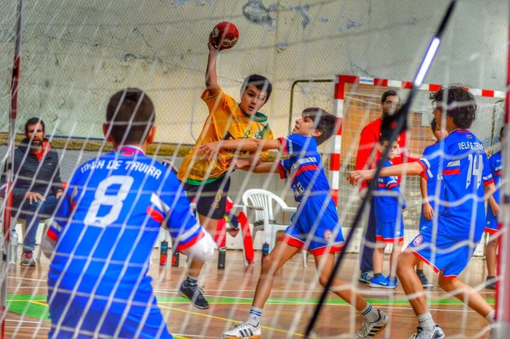
TorneioO encontro de Minis Masculinos e Femininos reúne jovens atletas em Olhão e na Fuzeta.
 Evento
Evento
A Primavera Desportiva reúne clubes, modalidades e centenas de participantes no Jardim Pescador Olhanense.
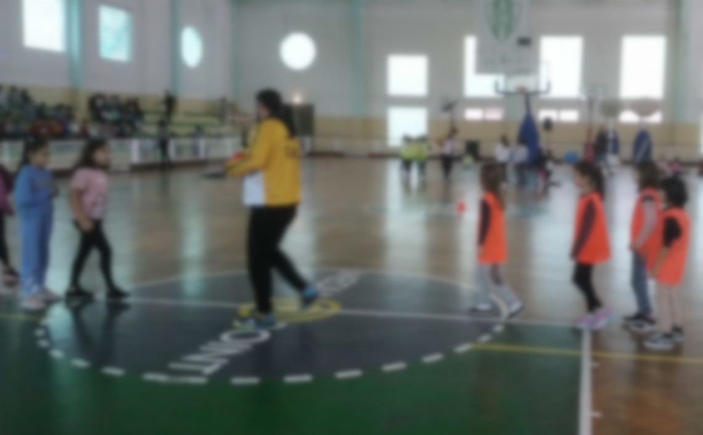
EscolaO andebol chegou à escola através de uma iniciativa de proximidade com os alunos.
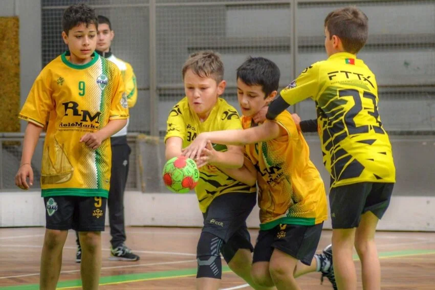
FormaçãoO clube arranca a época 2023/24 com ambição de crescer e reforçar a formação.
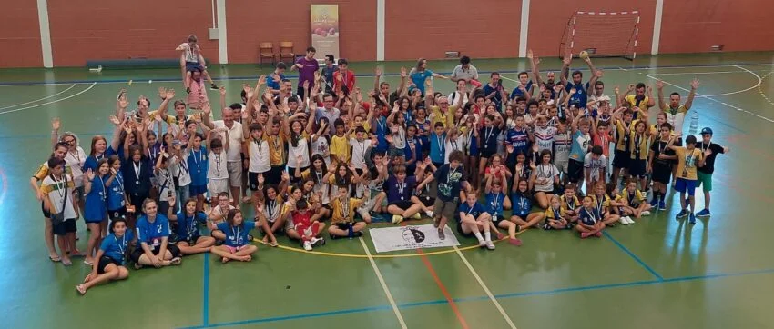
TorneioO torneio reuniu atletas Minis Sub-12 em três dias de competição, amizade e aprendizagem.
O encontro de Minis foi anunciado para a Fuzeta, juntando equipas e jovens talentos do andebol.
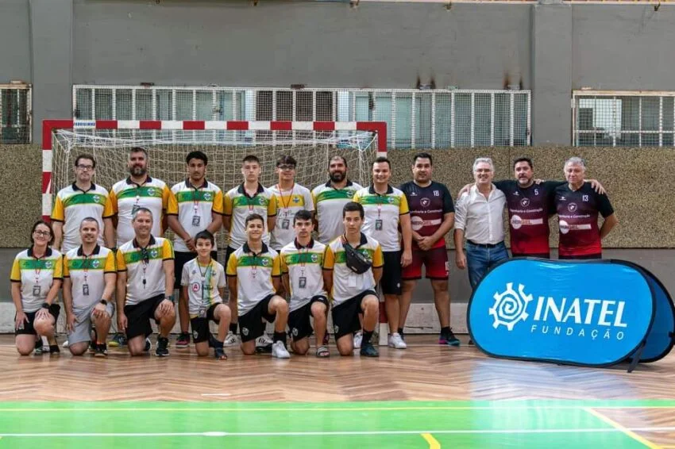
TorneioO Pavilhão Municipal de Olhão recebeu veteranos e finais da Taça da Associação de Andebol do Algarve.
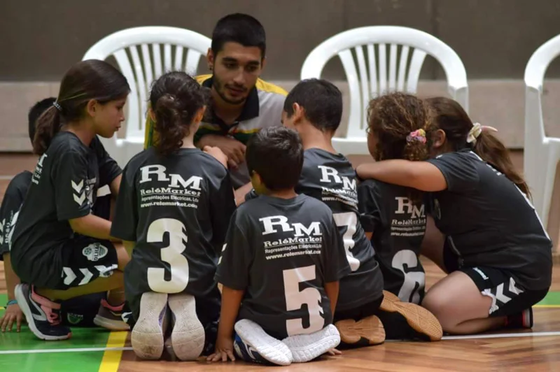
ClubeO clube decidiu tornar a iniciação ao andebol mais acessível às famílias.
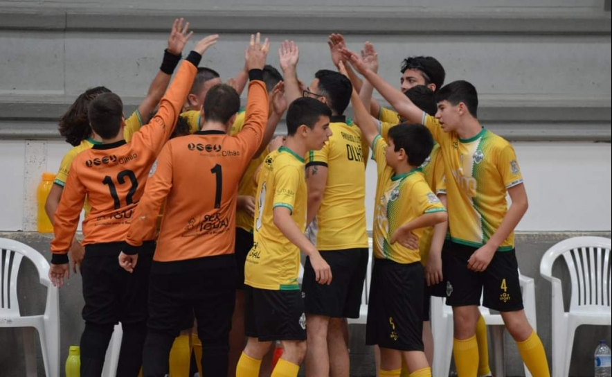
FormaçãoO clube preparou a época 2022/23 com escalões desde os 6 anos, veteranos e andebol adaptado.
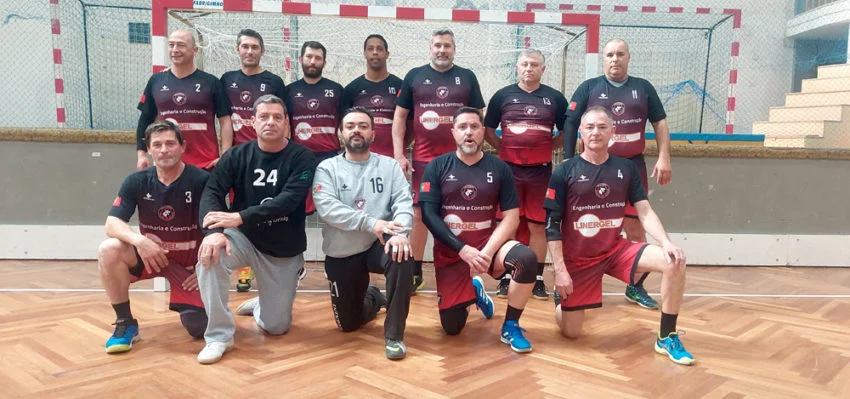
HomenagemO torneio homenageou Hélder Lemos e a sua ligação à história do andebol em Olhão.
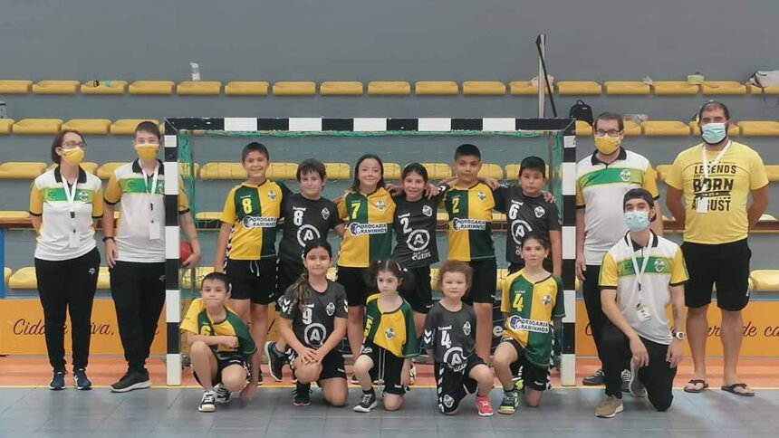
ClubeO jovem clube olhanense mostrou crescimento técnico e aumento do número de atletas.
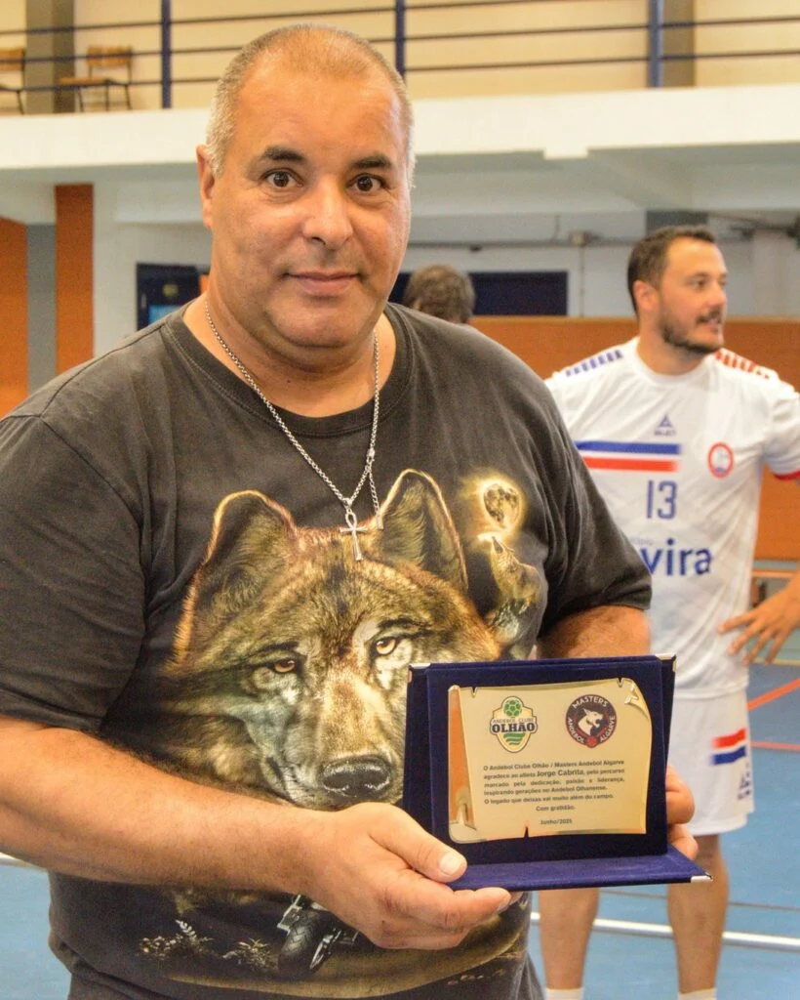
HomenagemO clube assinalou a ligação de Jorge Cabrita à modalidade e à história do andebol local.